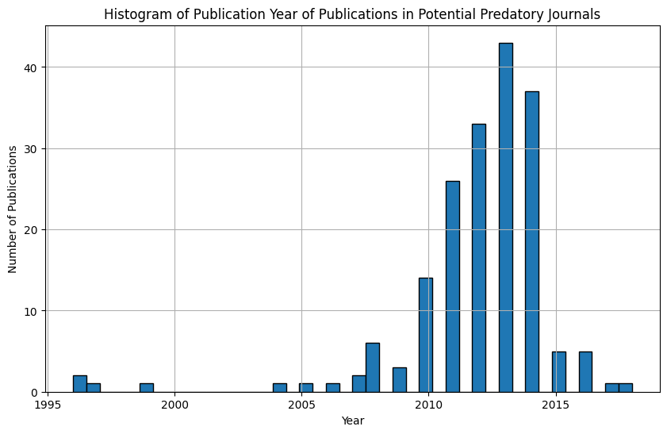

Predatory Journals#
Gets top cited articles from potential predatory journals
!pip install pandas
!pip install orjson
Requirement already satisfied: pandas in /home/natalie-widmann/anaconda3/lib/python3.11/site-packages (2.1.4)
Requirement already satisfied: numpy<2,>=1.23.2 in /home/natalie-widmann/anaconda3/lib/python3.11/site-packages (from pandas) (1.26.4)
Requirement already satisfied: python-dateutil>=2.8.2 in /home/natalie-widmann/anaconda3/lib/python3.11/site-packages (from pandas) (2.8.2)
Requirement already satisfied: pytz>=2020.1 in /home/natalie-widmann/anaconda3/lib/python3.11/site-packages (from pandas) (2023.3.post1)
Requirement already satisfied: tzdata>=2022.1 in /home/natalie-widmann/anaconda3/lib/python3.11/site-packages (from pandas) (2023.3)
Requirement already satisfied: six>=1.5 in /home/natalie-widmann/anaconda3/lib/python3.11/site-packages (from python-dateutil>=2.8.2->pandas) (1.16.0)
Requirement already satisfied: orjson in /home/natalie-widmann/anaconda3/lib/python3.11/site-packages (3.10.7)
import orjson
import pandas as pd
from banal import ensure_dict
import requests
import os
Define helper functions#
# Get OpenAlex json
def get_json(*args, **kwargs):
res = requests.get(*args, **kwargs)
assert res.ok
return res.json()
# Extract properties from Openalex API objects with nested dictionaries
def extract(obj, *paths):
paths = list(paths)
for p in paths[:-1]:
obj = ensure_dict(obj.get(p))
return obj.get(paths[-1])
Load journal list#
It’s difficult to categorize a journal as predatory journal as there are different critiera and the actual publication process can vary from the peer review process which is promised on the journal website.
Lists of potential predatory journals exists, but are also critized. Therefore, before any accusation or publication, validate the list of analyzed journals.
For more detail, have a look at the following resources:
For the purpose of this Jupyter notebook we use a small sample of journals of the first list to show the general steps for investigation.
# Create the DataFrame with the provided information
data = {
"warnlist__name": ["Abstract and Applied Analysis", "Academic Exchange Quarterly", "Adalya Journal", "HCTL Open International Journal of Technology Innovations and Research", "Journal of Pharmacology and Pharmacotherapeutics", "Professionals Center for Business Research"],
"warnlist__url": [
"https://www.hindawi.com/journals/aaa/",
"http://www.rapidintellect.com/AEQweb/",
"http://adalyajournal.com/",
"http://ijtir.hctl.org/",
"http://www.jpharmacol.com/",
"http://pcbr.net/"
],
"warnlist__additional_info": ["", "", "hijacker of a legitimate journal", "", "published by Medknow", ""],
}
warn_list = pd.DataFrame(data)
warn_list.head()
| warnlist__name | warnlist__url | warnlist__additional_info | |
|---|---|---|---|
| 0 | Abstract and Applied Analysis | https://www.hindawi.com/journals/aaa/ | |
| 1 | Academic Exchange Quarterly | http://www.rapidintellect.com/AEQweb/ | |
| 2 | Adalya Journal | http://adalyajournal.com/ | hijacker of a legitimate journal |
| 3 | HCTL Open International Journal of Technology ... | http://ijtir.hctl.org/ | |
| 4 | Journal of Pharmacology and Pharmacotherapeutics | http://www.jpharmacol.com/ | published by Medknow |
Define function to get journal and article information#
SOURCE_URL = "https://api.openalex.org/sources"
JOURNAL_COLS = ['id', 'issn', 'display_name', 'works_count', 'country_code', 'cited_by_count', 'works_api_url']
ARTICLE_COLS = ["id", "doi", "title", "publication_year", "publication_date", "oa_url", "cited_by_count", "location_count", "is_retracted"]
BASE_PARAMS = {
"per_page": 100,
"page": 1,
"sort": "cited_by_count:desc",
}
def get_top_articles_in_journal(warnlist_info={}):
# Get OA journal data based on ISSN
issn = warnlist_info.get('warnlist__issn', None)
if issn:
url = SOURCE_URL + f'/issn:{issn}'
else:
name = warnlist_info.get('warnlist__name').replace(' ', '%20')
url = SOURCE_URL + f'?filter=display_name.search:{name}'
print(url)
journal_resp = get_json(url)
if journal_resp['results'] == []:
return
else:
journal_resp = journal_resp['results'][0]
journal_data = {f"journal__{k}": v for k, v in journal_resp.items() if k in JOURNAL_COLS}
# Get 100 most cited articles from journal
articles_resp = get_json(journal_resp['works_api_url'], params=BASE_PARAMS)
articles = articles_resp["results"]
if not articles:
return
# get metadata for each article
for article in articles:
article_data = {f"article__{k}": v for k, v in article.items() if k in ARTICLE_COLS}
article_data["article__journal"] = extract(article, "primary_location", "source", "display_name")
article_data["article__primary_topic"] = extract(article, "primary_topic", "display_name")
article_data["article__primary_field"] = extract(article, "primary_topic", "field", "display_name")
# Get authors and institutions
for authorship in article["authorships"]:
author = {f"author__{k}": v for k, v in authorship["author"].items()}
for institution in authorship["institutions"]:
institution = {f"institution__{k}": v for k, v in institution.items() if k != 'lineage'}
yield {**warnlist_info, **journal_data, **article_data, **author, **institution}
Get the top cited articles of each journal#
df = pd.DataFrame()
for idx, journal in warn_list.iterrows():
print(journal['warnlist__name'])
try:
df = pd.concat([df, pd.DataFrame(get_top_articles_in_journal(journal.to_dict()))])
except Exception as e:
print(e)
Abstract and Applied Analysis
https://api.openalex.org/sources?filter=display_name.search:Abstract%20and%20Applied%20Analysis
Academic Exchange Quarterly
https://api.openalex.org/sources?filter=display_name.search:Academic%20Exchange%20Quarterly
Adalya Journal
https://api.openalex.org/sources?filter=display_name.search:Adalya%20Journal
HCTL Open International Journal of Technology Innovations and Research
https://api.openalex.org/sources?filter=display_name.search:HCTL%20Open%20International%20Journal%20of%20Technology%20Innovations%20and%20Research
Journal of Pharmacology and Pharmacotherapeutics
https://api.openalex.org/sources?filter=display_name.search:Journal%20of%20Pharmacology%20and%20Pharmacotherapeutics
Professionals Center for Business Research
https://api.openalex.org/sources?filter=display_name.search:Professionals%20Center%20for%20Business%20Research
Clean Data#
df = df[df['warnlist__name'] == df['journal__display_name']]
def join_list_column(df, column_name, separator=", "):
"""
Convert a list stored in a DataFrame column into a string with joined values.
"""
df[column_name] = df[column_name].apply(lambda x: separator.join(map(str, x)) if isinstance(x, list) else x)
return df
df = join_list_column(df, 'journal__issn')
df.head()
| warnlist__name | warnlist__url | warnlist__additional_info | journal__id | journal__issn | journal__display_name | journal__works_count | journal__cited_by_count | journal__country_code | journal__works_api_url | ... | article__primary_topic | article__primary_field | author__id | author__display_name | author__orcid | institution__id | institution__display_name | institution__ror | institution__country_code | institution__type | |
|---|---|---|---|---|---|---|---|---|---|---|---|---|---|---|---|---|---|---|---|---|---|
| 0 | Abstract and Applied Analysis | https://www.hindawi.com/journals/aaa/ | https://openalex.org/S54871839 | 1085-3375, 1687-0409 | Abstract and Applied Analysis | 5461 | 49059 | GB | https://api.openalex.org/works?filter=primary_... | ... | Fractional Laplacian Operators | Mathematics | https://openalex.org/A5065940783 | João Marcos do Ó | https://orcid.org/0000-0001-7039-4365 | https://openalex.org/I169045520 | Universidade Federal da Paraíba | https://ror.org/00p9vpz11 | BR | education | |
| 1 | Abstract and Applied Analysis | https://www.hindawi.com/journals/aaa/ | https://openalex.org/S54871839 | 1085-3375, 1687-0409 | Abstract and Applied Analysis | 5461 | 49059 | GB | https://api.openalex.org/works?filter=primary_... | ... | Iterative Algorithms for Nonlinear Operators a... | Computer Science | https://openalex.org/A5064838271 | Dan Butnariu | None | https://openalex.org/I91203450 | University of Haifa | https://ror.org/02f009v59 | IL | education | |
| 2 | Abstract and Applied Analysis | https://www.hindawi.com/journals/aaa/ | https://openalex.org/S54871839 | 1085-3375, 1687-0409 | Abstract and Applied Analysis | 5461 | 49059 | GB | https://api.openalex.org/works?filter=primary_... | ... | Iterative Algorithms for Nonlinear Operators a... | Computer Science | https://openalex.org/A5012941200 | Elena Resmerita | https://orcid.org/0000-0001-6670-8966 | https://openalex.org/I4210158379 | Johann Radon Institute for Computational and A... | https://ror.org/05a94k872 | AT | facility | |
| 3 | Abstract and Applied Analysis | https://www.hindawi.com/journals/aaa/ | https://openalex.org/S54871839 | 1085-3375, 1687-0409 | Abstract and Applied Analysis | 5461 | 49059 | GB | https://api.openalex.org/works?filter=primary_... | ... | Iterative Algorithms for Nonlinear Operators a... | Computer Science | https://openalex.org/A5012941200 | Elena Resmerita | https://orcid.org/0000-0001-6670-8966 | https://openalex.org/I138211613 | Austrian Academy of Sciences | https://ror.org/03anc3s24 | AT | government | |
| 4 | Abstract and Applied Analysis | https://www.hindawi.com/journals/aaa/ | https://openalex.org/S54871839 | 1085-3375, 1687-0409 | Abstract and Applied Analysis | 5461 | 49059 | GB | https://api.openalex.org/works?filter=primary_... | ... | Fixed Point Theorems in Metric Spaces | Mathematics | https://openalex.org/A5081792390 | Erdal Karapınar | https://orcid.org/0000-0002-6798-3254 | https://openalex.org/I45542416 | Atilim University | https://ror.org/04pd3v454 | TR | education |
5 rows × 28 columns
Store data#
os.makedirs('./results', exist_ok=True)
df.to_csv('./results/openalex__predatory_journals.csv', index=False)
Analysis#
Journals#
journals = df.drop_duplicates(subset=['journal__id', 'journal__display_name'])
journals.head()
| warnlist__name | warnlist__url | warnlist__additional_info | journal__id | journal__issn | journal__display_name | journal__works_count | journal__cited_by_count | journal__country_code | journal__works_api_url | ... | article__primary_topic | article__primary_field | author__id | author__display_name | author__orcid | institution__id | institution__display_name | institution__ror | institution__country_code | institution__type | |
|---|---|---|---|---|---|---|---|---|---|---|---|---|---|---|---|---|---|---|---|---|---|
| 0 | Abstract and Applied Analysis | https://www.hindawi.com/journals/aaa/ | https://openalex.org/S54871839 | 1085-3375, 1687-0409 | Abstract and Applied Analysis | 5461 | 49059 | GB | https://api.openalex.org/works?filter=primary_... | ... | Fractional Laplacian Operators | Mathematics | https://openalex.org/A5065940783 | João Marcos do Ó | https://orcid.org/0000-0001-7039-4365 | https://openalex.org/I169045520 | Universidade Federal da Paraíba | https://ror.org/00p9vpz11 | BR | education | |
| 0 | Journal of Pharmacology and Pharmacotherapeutics | http://www.jpharmacol.com/ | published by Medknow | https://openalex.org/S144901397 | 0976-500X, 0976-5018 | Journal of Pharmacology and Pharmacotherapeutics | 722 | 15196 | IN | https://api.openalex.org/works?filter=primary_... | ... | Animal Research Studies | Veterinary | https://openalex.org/A5070767219 | Jaykaran Charan | https://orcid.org/0000-0002-4857-6725 | https://openalex.org/I129862065 | Government Medical College | https://ror.org/007fenw03 | IN | education |
| 0 | Professionals Center for Business Research | http://pcbr.net/ | https://openalex.org/S4210234709 | 2409-9783 | Professionals Center for Business Research | 22 | 101 | PK | https://api.openalex.org/works?filter=primary_... | ... | Wireless Sensor Networks for Data Analysis | Computer Science | https://openalex.org/A5079242255 | Grzegorz Chodak | https://orcid.org/0000-0002-9604-482X | https://openalex.org/I11923345 | Wrocław University of Science and Technology | https://ror.org/008fyn775 | PL | education |
3 rows × 28 columns
# Overview on journals
print(f'Found {len(journals)} of {len(warn_list['warnlist__name'].unique())} journals on warn list.')
Found 3 of 6 journals on warn list.
journals['journal__country_code'].value_counts()
journal__country_code
GB 1
IN 1
PK 1
Name: count, dtype: int64
Institutions#
institution_df = df.drop_duplicates(subset=['article__id', 'institution__id'])
institution_counts = institution_df['institution__display_name'].value_counts()
institution_counts[:10]
institution__display_name
King Abdulaziz University 12
Jawaharlal Institute of Post Graduate Medical Education and Research 11
China University of Mining and Technology 6
Çankaya University 6
Government Medical College 6
Institute of Space Science 5
M. P. Shah Medical College 4
All India Institute of Medical Sciences 4
Al-Balqa Applied University 4
Serbian Academy of Sciences and Arts 4
Name: count, dtype: int64
frequent_institutions = institution_counts[institution_counts >= 10].index
frequent_institution_df = institution_df[institution_df['institution__display_name'].isin(frequent_institutions)]
frequent_institution_df[:10]
| warnlist__name | warnlist__url | warnlist__additional_info | journal__id | journal__issn | journal__display_name | journal__works_count | journal__cited_by_count | journal__country_code | journal__works_api_url | ... | article__primary_topic | article__primary_field | author__id | author__display_name | author__orcid | institution__id | institution__display_name | institution__ror | institution__country_code | institution__type | |
|---|---|---|---|---|---|---|---|---|---|---|---|---|---|---|---|---|---|---|---|---|---|
| 18 | Abstract and Applied Analysis | https://www.hindawi.com/journals/aaa/ | https://openalex.org/S54871839 | 1085-3375, 1687-0409 | Abstract and Applied Analysis | 5461 | 49059 | GB | https://api.openalex.org/works?filter=primary_... | ... | Theory and Applications of Fractional Differen... | Mathematics | https://openalex.org/A5077672620 | Bashir Ahmad | https://orcid.org/0000-0001-5350-2977 | https://openalex.org/I185163786 | King Abdulaziz University | https://ror.org/02ma4wv74 | SA | education | |
| 39 | Abstract and Applied Analysis | https://www.hindawi.com/journals/aaa/ | https://openalex.org/S54871839 | 1085-3375, 1687-0409 | Abstract and Applied Analysis | 5461 | 49059 | GB | https://api.openalex.org/works?filter=primary_... | ... | Fixed Point Theorems in Metric Spaces | Mathematics | https://openalex.org/A5055431798 | Ravi P. Agarwal | https://orcid.org/0000-0003-0634-2370 | https://openalex.org/I185163786 | King Abdulaziz University | https://ror.org/02ma4wv74 | SA | education | |
| 146 | Abstract and Applied Analysis | https://www.hindawi.com/journals/aaa/ | https://openalex.org/S54871839 | 1085-3375, 1687-0409 | Abstract and Applied Analysis | 5461 | 49059 | GB | https://api.openalex.org/works?filter=primary_... | ... | Image Denoising Techniques and Algorithms | Computer Science | https://openalex.org/A5030756029 | Dumitru Băleanu | https://orcid.org/0000-0002-0286-7244 | https://openalex.org/I185163786 | King Abdulaziz University | https://ror.org/02ma4wv74 | SA | education | |
| 173 | Abstract and Applied Analysis | https://www.hindawi.com/journals/aaa/ | https://openalex.org/S54871839 | 1085-3375, 1687-0409 | Abstract and Applied Analysis | 5461 | 49059 | GB | https://api.openalex.org/works?filter=primary_... | ... | Anomalous Diffusion Modeling and Analysis | Mathematics | https://openalex.org/A5030756029 | Dumitru Băleanu | https://orcid.org/0000-0002-0286-7244 | https://openalex.org/I185163786 | King Abdulaziz University | https://ror.org/02ma4wv74 | SA | education | |
| 194 | Abstract and Applied Analysis | https://www.hindawi.com/journals/aaa/ | https://openalex.org/S54871839 | 1085-3375, 1687-0409 | Abstract and Applied Analysis | 5461 | 49059 | GB | https://api.openalex.org/works?filter=primary_... | ... | Anomalous Diffusion Modeling and Analysis | Mathematics | https://openalex.org/A5030756029 | Dumitru Băleanu | https://orcid.org/0000-0002-0286-7244 | https://openalex.org/I185163786 | King Abdulaziz University | https://ror.org/02ma4wv74 | SA | education | |
| 214 | Abstract and Applied Analysis | https://www.hindawi.com/journals/aaa/ | https://openalex.org/S54871839 | 1085-3375, 1687-0409 | Abstract and Applied Analysis | 5461 | 49059 | GB | https://api.openalex.org/works?filter=primary_... | ... | Fixed Point Theorems in Metric Spaces | Mathematics | https://openalex.org/A5089045945 | Nawab Hussain | https://orcid.org/0000-0001-6585-2202 | https://openalex.org/I185163786 | King Abdulaziz University | https://ror.org/02ma4wv74 | SA | education | |
| 226 | Abstract and Applied Analysis | https://www.hindawi.com/journals/aaa/ | https://openalex.org/S54871839 | 1085-3375, 1687-0409 | Abstract and Applied Analysis | 5461 | 49059 | GB | https://api.openalex.org/works?filter=primary_... | ... | Networked Control Systems | Engineering | https://openalex.org/A5080263475 | Fuad E. Alsaadi | https://orcid.org/0000-0001-6420-3948 | https://openalex.org/I185163786 | King Abdulaziz University | https://ror.org/02ma4wv74 | SA | education | |
| 242 | Abstract and Applied Analysis | https://www.hindawi.com/journals/aaa/ | https://openalex.org/S54871839 | 1085-3375, 1687-0409 | Abstract and Applied Analysis | 5461 | 49059 | GB | https://api.openalex.org/works?filter=primary_... | ... | Statistical Convergence in Approximation Theor... | Mathematics | https://openalex.org/A5078048991 | S. A. Mohiuddine | https://orcid.org/0000-0002-9050-9104 | https://openalex.org/I185163786 | King Abdulaziz University | https://ror.org/02ma4wv74 | SA | education | |
| 249 | Abstract and Applied Analysis | https://www.hindawi.com/journals/aaa/ | https://openalex.org/S54871839 | 1085-3375, 1687-0409 | Abstract and Applied Analysis | 5461 | 49059 | GB | https://api.openalex.org/works?filter=primary_... | ... | Fixed Point Theorems in Metric Spaces | Mathematics | https://openalex.org/A5055028868 | Tomonari Suzuki | https://orcid.org/0000-0002-2524-6045 | https://openalex.org/I185163786 | King Abdulaziz University | https://ror.org/02ma4wv74 | SA | education | |
| 266 | Abstract and Applied Analysis | https://www.hindawi.com/journals/aaa/ | https://openalex.org/S54871839 | 1085-3375, 1687-0409 | Abstract and Applied Analysis | 5461 | 49059 | GB | https://api.openalex.org/works?filter=primary_... | ... | Anomalous Diffusion Modeling and Analysis | Mathematics | https://openalex.org/A5030756029 | Dumitru Băleanu | https://orcid.org/0000-0002-0286-7244 | https://openalex.org/I185163786 | King Abdulaziz University | https://ror.org/02ma4wv74 | SA | education |
10 rows × 28 columns
Articles#
article_df = df.drop_duplicates(subset = ['article__id', 'article__title'])
article_df[cols]
| journal__display_name | article__id | article__title | author__display_name | institution__display_name | |
|---|---|---|---|---|---|
| 0 | Abstract and Applied Analysis | https://openalex.org/W2085926441 | <mml:math xmlns:mml="http://www.w3.org/1998/Ma... | João Marcos do Ó | Universidade Federal da Paraíba |
| 1 | Abstract and Applied Analysis | https://openalex.org/W2018094386 | Bregman distances, totally convex functions, a... | Dan Butnariu | University of Haifa |
| 4 | Abstract and Applied Analysis | https://openalex.org/W2168203105 | Generalized - Contractive Type Mappings and Re... | Erdal Karapınar | Atilim University |
| 6 | Abstract and Applied Analysis | https://openalex.org/W2141858378 | Asymptotic Methods for Solitary Solutions and ... | Ji‐Huan He | Soochow University |
| 7 | Abstract and Applied Analysis | https://openalex.org/W2091571469 | A Theory of Besov and Triebel‐Lizorkin Spaces ... | Yongsheng Han | Auburn University |
| ... | ... | ... | ... | ... | ... |
| 229 | Journal of Pharmacology and Pharmacotherapeutics | https://openalex.org/W2051152621 | Comparative evaluation of adverse drug reactio... | Parloop Bhatt | B.J. Medical College |
| 230 | Journal of Pharmacology and Pharmacotherapeutics | https://openalex.org/W2034042451 | Adverse drug reaction profile of oseltamivir i... | Prashant Dalvi | M. P. Shah Medical College |
| 235 | Journal of Pharmacology and Pharmacotherapeutics | https://openalex.org/W2034072192 | Dapsone hypersensitivity syndrome: A rare life... | Kolar Vishwanath Vinod | Jawaharlal Institute of Post Graduate Medical ... |
| 0 | Professionals Center for Business Research | https://openalex.org/W2290575628 | The Nuisance of Slow Moving Products in Electr... | Grzegorz Chodak | Wrocław University of Science and Technology |
| 1 | Professionals Center for Business Research | https://openalex.org/W3121474442 | Economic Integration and Endogenous Growth Rev... | Raul A. Barreto | University of Adelaide |
183 rows × 5 columns
import matplotlib.pyplot as plt
plt.figure(figsize=(10, 6))
plt.hist(article_df['article__publication_year'], bins=42, edgecolor='black')
plt.title('Histogram of Publication Year of Publications in Potential Predatory Journals')
plt.xlabel('Year')
plt.ylabel('Number of Publications')
plt.grid(True)
plt.show()

primary_field = article_df['article__primary_field'].value_counts()
primary_field[:10]
article__primary_field
Mathematics 68
Medicine 56
Computer Science 12
Biochemistry, Genetics and Molecular Biology 9
Engineering 8
Pharmacology, Toxicology and Pharmaceutics 6
Veterinary 5
Physics and Astronomy 4
Neuroscience 3
Decision Sciences 3
Name: count, dtype: int64
primary_topic = article_df['article__primary_topic'].value_counts()
primary_topic[:10]
article__primary_topic
Anomalous Diffusion Modeling and Analysis 25
Theory and Applications of Fractional Differential Equations 8
Fixed Point Theorems in Metric Spaces 6
Adverse Drug Reactions and Pharmacovigilance 6
Iterative Algorithms for Nonlinear Operators and Optimization 5
Animal Research Studies 5
Stability of Functional Equations in Mathematical Analysis 5
Statistical Convergence in Approximation Theory and Functional Analysis 4
Matrix Inequalities and Geometric Means 4
Polypharmacy and Inappropriate Medication Use in Elderly 4
Name: count, dtype: int64
article_df['article__is_retracted'].value_counts()
article__is_retracted
False 183
Name: count, dtype: int64